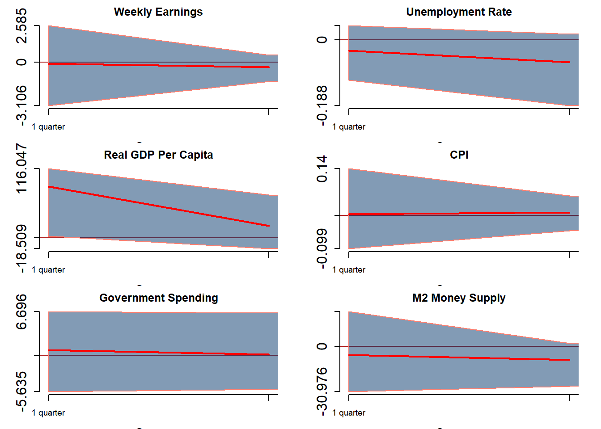

Abstract.
Keywords. svars, impulse responses, quarto, R, monetary policy
The goal of this research project is to analyze the impact of unconditional government stipends on the U.S. economy, such as stimulus checks. To identify these effects I will analyze the effects of the stimulus checks and increased unemployment benefits issued by the US government in the wake of the COVID-19 pandemic.
This is an important topic as inequality rises direct government action may become increasingly necessary. Increased taxation on the rich and targeted government programs can only do so much to help those at the lower and middle ends of income. Especially as the groups in need of help become larger and their needs more diverse, the high administrative costs of judging who gets the benefits and what they are applicable to may become untenable. In this case, regular stimulus payments or higher unemployment benefits may become necessary to the continued economic health of the country. However, without knowing the effects of these methods, it is difficult to say whether or not they would do more harm than good.
For the purpose of this analysis data the United States Federal Reserve will be utilized. This source uses government data and is considered highly reliable. A potential issue is the information available being limited by the frequency with which the government collects data. To counter this, the estimates will use a long history and quarterly data which is the most frequent commonly available data.
The core factors chosen, median income, gdp per capita, and unemployment, were chosen for widely being considered to be strong indicators of economic health. An estimated four lags are used as this is quarterly data so by incorporating four lags seasonal effects are adequately accounted for.
Real GDP Per Capita, Quarterly: https://fred.stlouisfed.org/series/A939RX0Q048SBEA
Unemployment Rate, Monthly: https://fred.stlouisfed.org/series/UNRATE
Median Usual Weekly Real Earnings: https://fred.stlouisfed.org/series/LES1252881600Q
Consumer Price Index, Less Food and Energy: https://fred.stlouisfed.org/series/CPILFESL
Real Government Consumption Expenditures: https://fred.stlouisfed.org/series/A955RX1Q020SBEA
M2 Real Money Supply: https://fred.stlouisfed.org/series/M2REAL
Median income is chosen over average income as, due to income disparity in the united states, there are large distortions in the average compared to the median. As stimulus payments and increased unemployment benefits are likely to more significantly impact lower income individuals it was determined that the median income would prove more suitable
GDP per capita is selected as it accounts for fluctuations in population over time instead of including effects that could be simple shifts in total population
Unemployment is utilized at it is of paramount concern in either confirming or assuaging concerns that, with relatively less incentive to work, that a portion of the population will elect not to work.
CPI will reflect the changes in price level as a result of subsidies. Prices of food and energy are ignored as there are a large number of confounding factors which may distort data but are usually short term shocks as opposed to more systemic changes. For example, eggs fluctuated wildly in price in the United States for several months in early 2023 due solely to the conditions of the egg market and not due to any outside effects. For more durable goods it is expected that the changes in price level will be due largely due to more systemic shifts than short-term changes.
Real government consumption will certainly rise, at least short term, when income rises as a result of the increase in income being due to government subsidy. Of interest is signs of potential decrease in government expenditure in other sectors due to rising incomes, or if no such signs appear.
M2 money supply is included as contraction or expansion of the money supply can serve as an indicator for several other variables such as investment, interest rates, and spending.
All vlaues except unemployment rate are taken as first differences to make them a stationary series. Unemployment rate is already stationary and as such does not require transformation. Both the nonstationary and the stationary series will be shown.


Registered S3 method overwritten by 'quantmod':
method from
as.zoo.data.frame zoo
Augmented Dickey-Fuller Test
data: as.vector(urate$`Unemployment Rate %`)
Dickey-Fuller = -3.0594, Lag order = 4, p-value = 0.1337
alternative hypothesis: stationary
Augmented Dickey-Fuller Test
data: as.vector(mearn$`Weekly Earnings`)
Dickey-Fuller = -2.8796, Lag order = 4, p-value = 0.2087
alternative hypothesis: stationary
Augmented Dickey-Fuller Test
data: as.vector(rgdpcap$`Real GDP Per Capita`)
Dickey-Fuller = -2.4047, Lag order = 4, p-value = 0.4072
alternative hypothesis: stationary
Augmented Dickey-Fuller Test
data: as.vector(CPI$CPI)
Dickey-Fuller = -1.8612, Lag order = 4, p-value = 0.6344
alternative hypothesis: stationary
Augmented Dickey-Fuller Test
data: as.vector(govex$`GovSpend in Billions`)
Dickey-Fuller = -2.7255, Lag order = 4, p-value = 0.2718
alternative hypothesis: stationary
Augmented Dickey-Fuller Test
data: as.vector(M2$`M2 Money Supply`)
Dickey-Fuller = -1.7734, Lag order = 4, p-value = 0.6713
alternative hypothesis: stationary
Augmented Dickey-Fuller Test
data: diff(as.vector(urate$`Unemployment Rate %`), k = 3)
Dickey-Fuller = -5.5357, Lag order = 5, p-value = 0.01
alternative hypothesis: stationary
Augmented Dickey-Fuller Test
data: diff(as.vector(mearn$`Weekly Earnings`), k = 3)
Dickey-Fuller = -5.5319, Lag order = 5, p-value = 0.01
alternative hypothesis: stationary
Augmented Dickey-Fuller Test
data: diff(as.vector(rgdpcap$`Real GDP Per Capita`), k = 3)
Dickey-Fuller = -6.0531, Lag order = 5, p-value = 0.01
alternative hypothesis: stationary
Augmented Dickey-Fuller Test
data: diff(as.vector(CPI$CPI), k = 3)
Dickey-Fuller = -2.6484, Lag order = 6, p-value = 0.3028
alternative hypothesis: stationary
Augmented Dickey-Fuller Test
data: diff(as.vector(govex$`GovSpend in Billions`), k = 3)
Dickey-Fuller = -4.3039, Lag order = 5, p-value = 0.01
alternative hypothesis: stationary
Augmented Dickey-Fuller Test
data: diff(as.vector(M2$`M2 Money Supply`), k = 3)
Dickey-Fuller = -5.6565, Lag order = 6, p-value = 0.01
alternative hypothesis: stationaryAll of the variables of interest show a gradually decaying ACF and essentially no significant PACF. This is consistent with variables that have a strong dependence on prior observed values and no significant dependence on the error of the prior observations. This indicates that an AR model is indeed useful for predicting the behavior of these variables.
The ADF tests indicate that all of the processes are unit root non-stationary. This is consistent with expectations as all of the variables visually exhibit a strong upward trend. Unemployment rate being non-stationary is something of a surprise, but it has the smallest p-value at 0.1337. On visual inspection it can be seen that, barring the COVID shock, unemployment rate has been cyclical but downward trending.
First Differences shown below.


As can be seen above, many of the series are reasonably static over time except for the beginning of the COVID-19 pandemic. This sudden, dramatic change can skew data, especially given the relatively small number of observations amplifying the effects of any outliers. As a result a simple SVAR may not return accurate results due to attributing too much weight to COVID shocks since SVAR models have difficulty accounting for exogenous shocks.
To compensate for this the variance spike during the early periods of COVID will need to be accounted for.
The model utilized will be a six variables SVAR with the following specification
\[Y = XA + U\] \[U|X \sim i.i.d. MN_{TxN}(0,\Sigma,\Omega)\]
\[\bf{y}_t = \begin{bmatrix} mearn_t & =Mean Earnings\\ urate_t & =Unemployment Rate\\ rgdpcap_t & =Real GDP Per Capita\\ CPI_t & =Consumer Price Index\\ govex_t & =Government Consumption Expenditure\\ M2_t & =M2 Money Supply \end{bmatrix}\]
In this model four lags are utilized, bringing the final relationship to
\[\bf{y}_t = \bf{y}_{t-1}\boldsymbol\alpha_1 + \bf{y}_{t-2}\boldsymbol\alpha_2 + \bf{y}_{t-3}\boldsymbol\alpha_3 + \bf{y}_{t-4}\boldsymbol\alpha_4 + U_t\]
t subscripts indicate the time period relative to the present. E.g. t-1 indicates the value of the variable one period in the past.
This model goes to four lags as the data is quarterly and this ensures that seasonality effects are removed. The model will serve to identify the effects of shocks on the US economy stemming from stimulus payments as stimulus payments may be treated as one period shocks to income and the impulse response function will tell us the effects that such payments have on the economy.
Estimating the effects of increased unemployment benefits is more difficult but can be achieved by treating these as a wage floor as presumably if one would be paid less than unemployment benefits one will choose not to work except as necessary to maintain benefits. Thus median income can be replaced with minimum wage in the above calculation and high levels of unemployment benefits treated as an effective increase in the minimum wage. As an alternative, the effects of a universal basic income program may be estimated as a permanent increase in income to all members of society regardless of their employment status.
These are all relevant to the economic situation in the United States going forward. A combination of stagnating wages, low minimum wage, and increasing income inequality threatens to force more forceful government action to avert economic crisis stemming from a lower-class which no longer lives at a subsistence level. While this state has not yet been reached it is a looming threat which must be addressed. The number of government programs to help low income individuals is immense but oftentimes much time and energy is spent ensuring that the “undeserving” are not given these benefits which can lead to those in need being rejected or ending up in worse circumstances due to long delays in receiving assistance. All of the proposed methods due to their weak targeting requirements would provide relief more rapidly and potentially aid in economic growth more than programs targeted at covering expenses related to a specific aspect of life.
The following is largely taken from Ray’s code and provided with consent.

As can be seen, when weekly earnings is shocked, it tends to cause a shock in the opposite direction in the next period, followed by a small increase, and then stabilizing such that by the end of the second year an income shock creates no further changes in the economy. Curiously, unemployment rate also falls and RGDP experiences a spike before returning to no continuing effect. M2 Money Supply is decreased and suffers from a decreased future growth as well.
CPI and Government Expenditure show no significant effects in this model.
One possible explanation for these changes seeming contradictory to initial assumptions is the holiday worker rush and holiday bonuses interacting with the data. This seasonality should be controlled for by the lag order but I can think of no other viable explanation. In the United States, there is a significant upsurge in employment during the time right around Christmas in December, both in the lead up and during Christmas. During this time is also when many bonuses are paid to workers. And an upsurge in employment is consistent with a spike in RGDP per capita.
Another possible reason is the volatility spike from COVID completely subsuming all other effects so that the real effects cannot be observed.
Further analysis is needed as I am unclear why these results are occurring in what should be the absence of seasonality and sign restrictions. To test this I will create a second set of Impulse Response Functions including only pre-COVID effects. This will also help me tell what form I expect my IRFs to take after adjusting for COVID.
IRFS using only pre 2020 data

By removing the post-COVID data it can be seen that the shock to earnings results in a very different pattern. This is consistent with the belief that the large COVID shock has a distortionary effect on all estimations. In this case a shock to weekly earnings results in only a very small effect moving forward, as well as a small decrease in the unemployment rate which adjusts over time but never returns to no change. RGDP per capita shows a similar response regardless of if COVID data is included or not, the main difference is that it does not exhibit a large counter-shock at any point. CPI appear uninfluenced by Weekly Earnings, as does Government Spending. M2 money supply exhibits a downward shift, but to a much lesser extent than the previous model.
Moving forward into the next model, COVID-19 data will be included but it will be treated as a shock to variance. This ideally allows for the most accurate model yet as it uses the full data set but does not suffer from large distortionary effects.